Track the target speed
Reach the commanded forward or reverse velocity without stalling.
University of Michigan · *Equal contribution
1Electrical Engineering and Computer Science · 2Robotics · 3Aerospace Engineering
High-speed reverse driving · Hidden vehicle dynamics · Snow and uneven terrain

We learn tractor–trailer dynamics from recent motion to improve control when friction and terrain are unknown. In BeamNG.tech, we test reverse driving at target speeds of 30 and 50 km/h and forward driving at 80 km/h.
Learned-dynamics MPPI completes more runs than the tested analytic controllers, with its strongest advantage in reverse. It also transfers to slopes and banking absent from training, though reverse stalls remain a challenge on snowy slopes.
Track the target speed, stay on the road, and avoid jackknifing.
Reach the commanded forward or reverse velocity without stalling.
Keep the tractor–trailer articulation bounded to avoid jackknife.
Condition predictions on observed history without explicit friction or terrain inputs.
A passive trailer is difficult to stabilize in reverse. Snow and uneven terrain make accurate motion prediction harder.
The tractor controls a passive trailer through the hitch. A steering correction changes both vehicles’ motion.
Small motion errors can grow into a jackknife. Higher speed leaves less time to correct them.
Friction, slope, banking, and suspension affect the vehicle’s response but are not direct inputs to the learned model.
Much of tractor–trailer control research focuses on parking and low-speed navigation. We study reverse driving near handling limits, where errors in the dynamics model directly affect control.
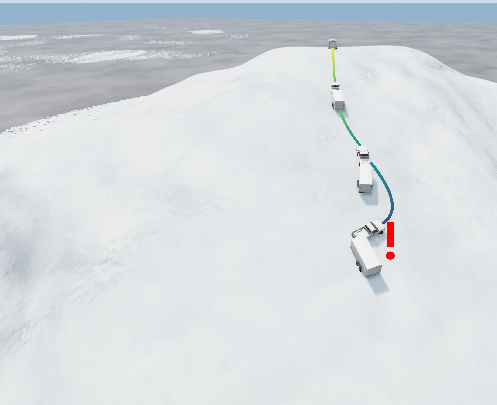
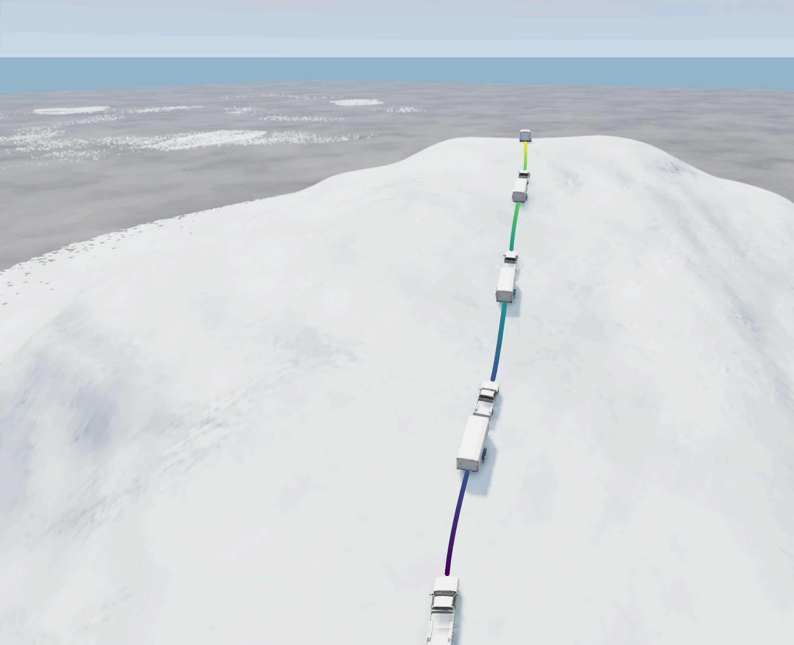
Learned MPPI against Fiala-prior MPPI, LQR-PID, IPOPT-based MPC, and MPCC across four environments.
Five-second rollouts from learned dynamics and analytic priors with and without access to local friction.
A coupled tractor–trailer model with Fiala tire forces provides the physical baseline.
A neural network predicts vehicle motion from a short state-action history. MPPI uses these predictions to choose steering and acceleration.

An MLP with four hidden layers of 128 units takes four steps of state-action history.
Hitch angle, velocities, yaw rates, and commanded and realized controls predict accelerations and the next realized controls.
Offline trajectories vary speed and friction, with control noise, weaving, and added runs near handling limits.
A planar tractor–trailer model couples both bodies through a rigid hitch and uses Fiala tire forces.
The state includes position, both yaw angles, tractor velocity, and both yaw rates.
The hitch couples tractor and trailer accelerations. Tire forces and inertial terms are solved together at each step.
Lateral tire force depends on slip angle, friction, normal load, and cornering stiffness. The model omits many terrain, suspension, and powertrain effects present in BeamNG.tech.
We add snow and terrain changes separately to a Barcelona-Catalunya track layout in BeamNG.tech. Slope and banking are absent from training. The same snow pattern and terrain are reused in the combined setting.
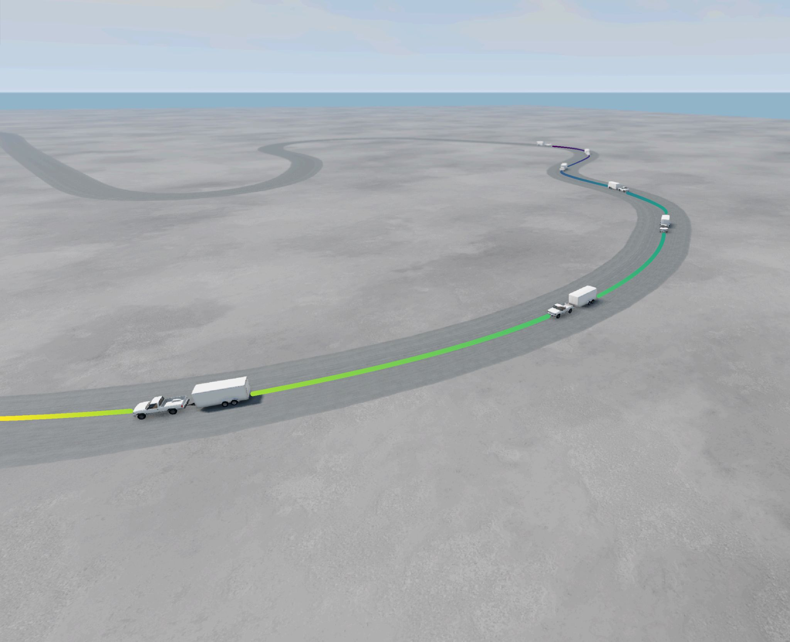
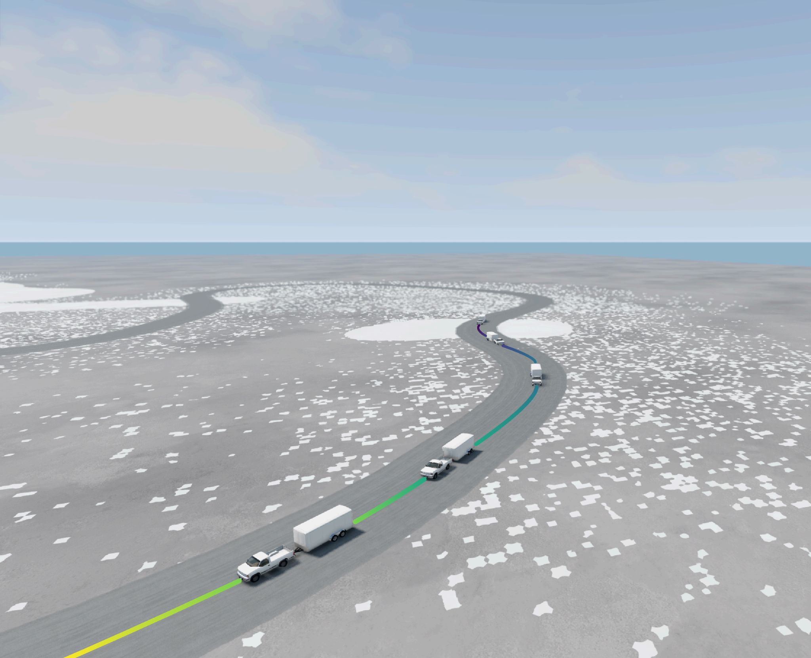
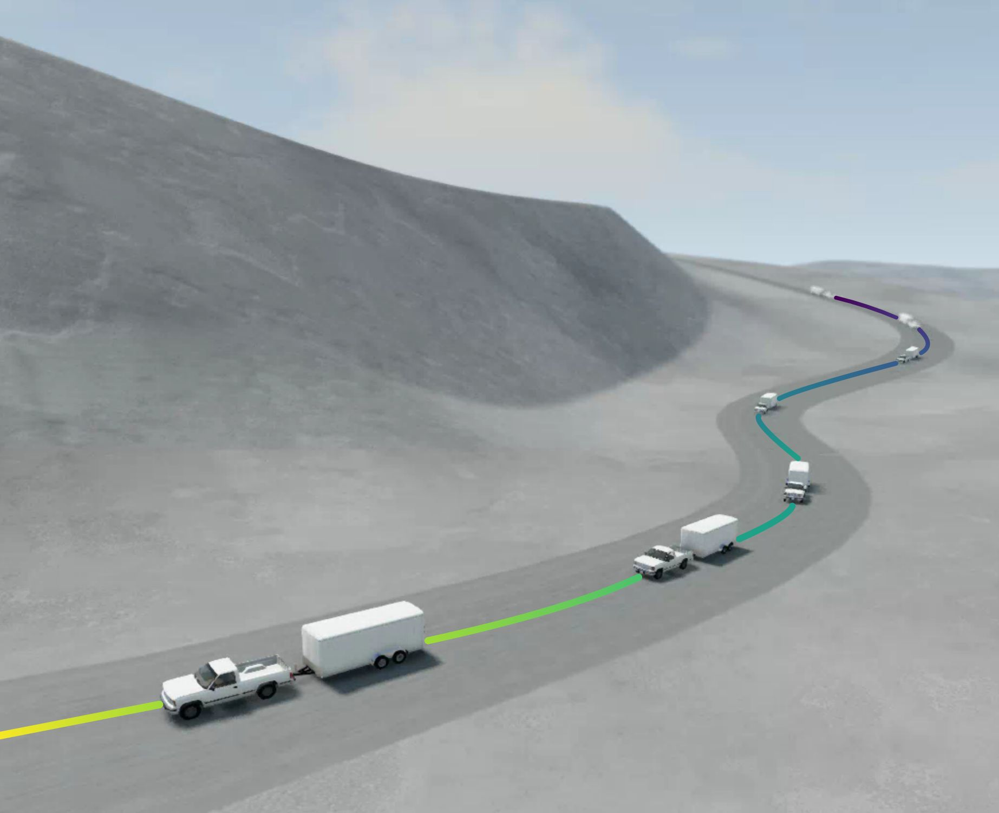
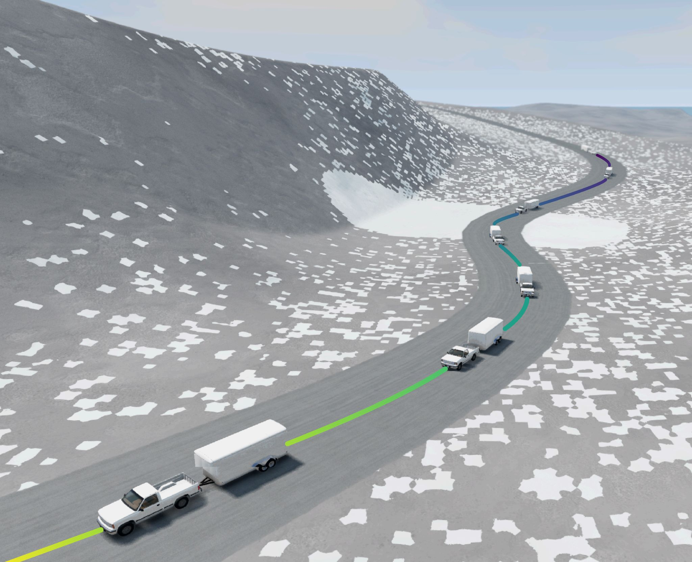
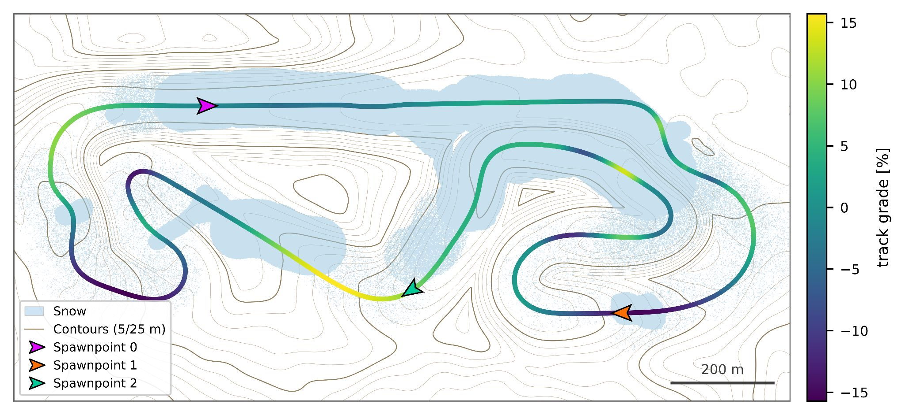
Each speed and environment has nine trials: three seeds at three starting locations. Completion means reaching 500 control steps (25 seconds), not finishing a lap.
Learned MPPI completes all 27 trials in each environment, across both reverse targets and the forward target.
Learned MPPI completes 25/27 trials on Slope: 8/9 at each reverse target and 9/9 forward.
Learned MPPI completes 19/27 trials with no jackknife failures. Eight reverse trials end in stalls.
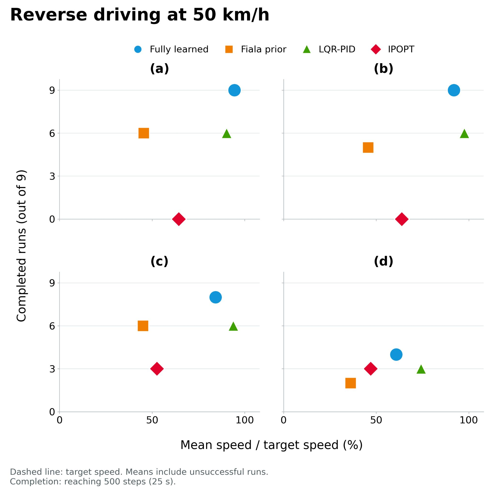
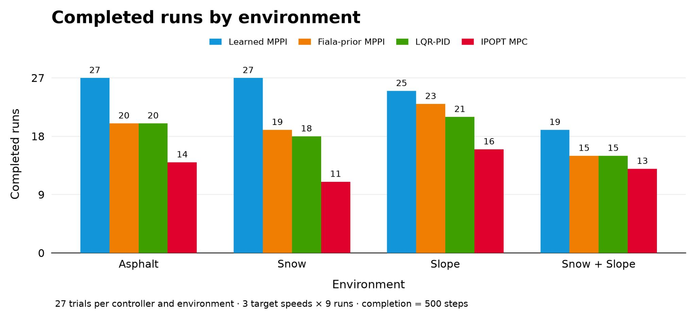
The plots show four controllers. Paper Table II also includes MPCC, hitch-angle errors, and failure counts. In forward driving on both sloped settings, LQR-PID matches learned MPPI’s completion rate with slightly higher speed and lower hitch-angle error.
We compare five-second predictions against BeamNG.tech trajectories: an analytic prior fixed at μ = 1, a prior given local friction, and a learned model using four steps of history.
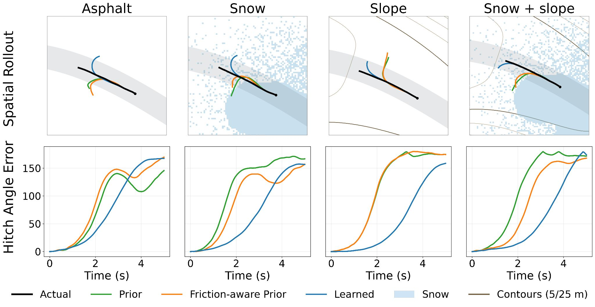
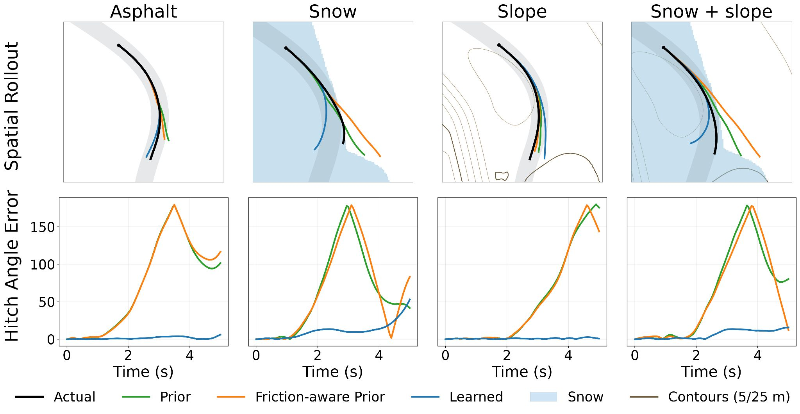
These are open-loop errors, not closed-loop tracking errors. See Table III for RMSE values.